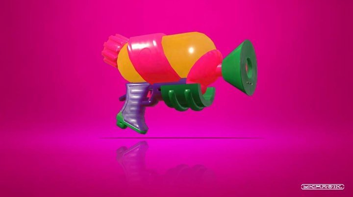
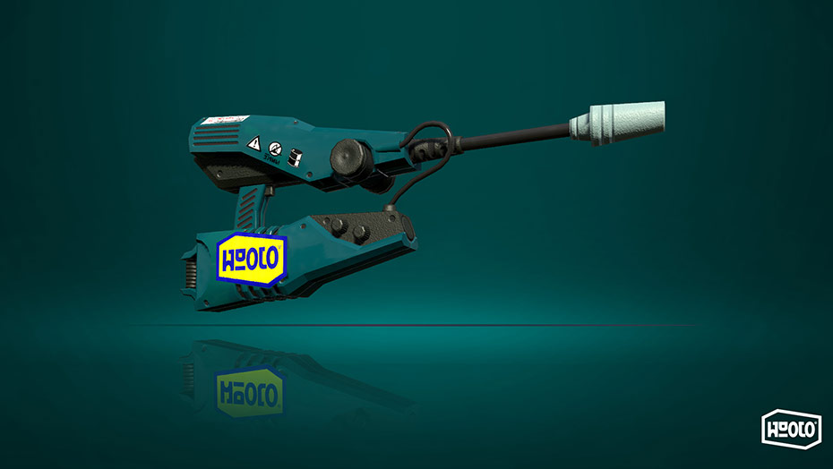
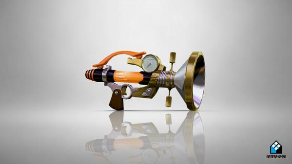
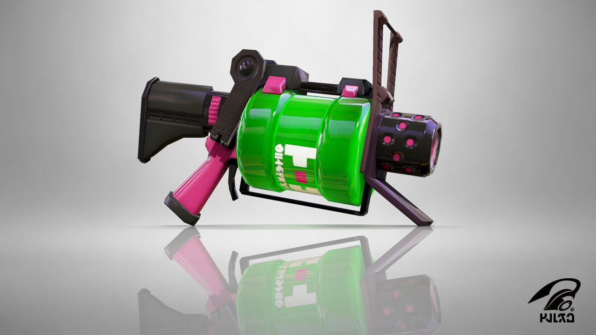
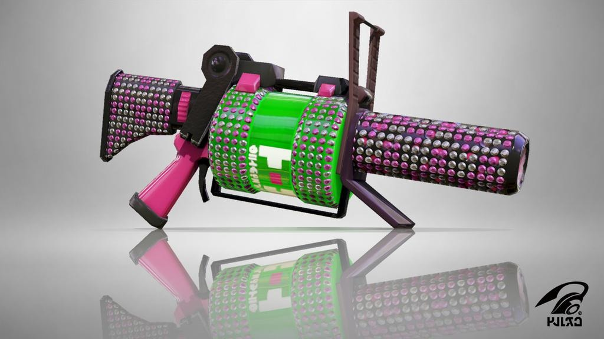
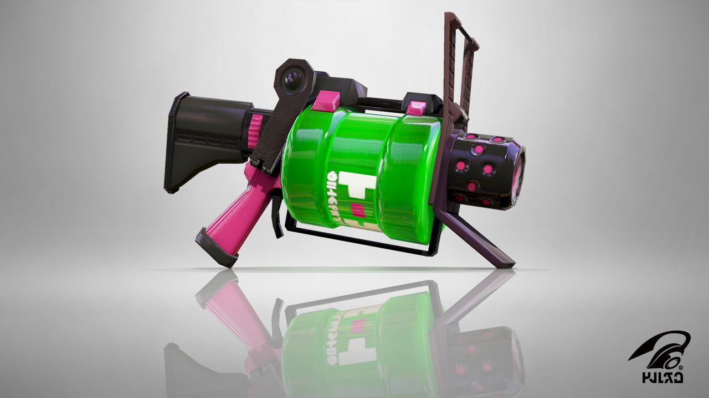
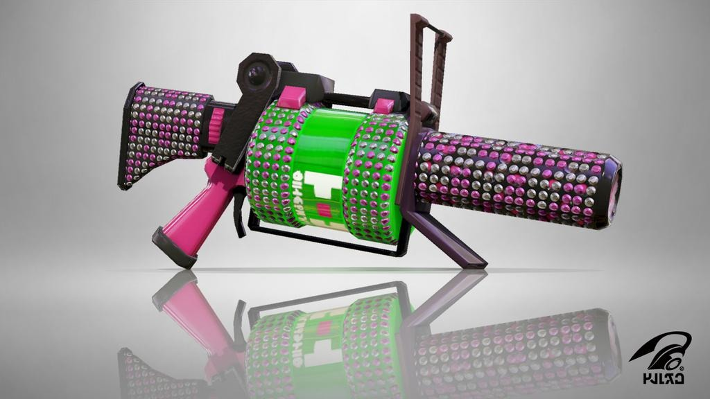

ОРУЖИЯ
Краскоматы
Краскоматы (Shooters) - это аналог обычных автоматов. У них нет никаких особенностей, сами по себе очень разновидны:
имеют разное расстояние выстрела, скорость, урон. Сами краскоматы делятся на несколько категорий: каплестрелы,
плескари, плюхотроны, плюхомёты, струевики и аэроспреи.

Каплестрел (Splattershot) - имеют среднюю дистанцию, среднюю скорость и средний урон. Самое то для новичка, одно из самых
сбалансированных орудий в игре. Есть от вариации от фирм "Tentatek" и "Toni Kensa". Также имеет облегчённую (Splattershot Jr.) и ПРО (Splattershot PRO) версии. Облегчённая стреляет быстрее, но при этом урон и дистанция
понижены ("Toni Kensa"). ПРО - стреляют дальше, наносят чуть больше урона, но стреляют медленнее ("Forge", "Toni Kensa").

Плескарь (Jet Squelcher) - самый дальнестрельный краскомат, обладает средней скоростью и средним уроном. Подойдёт для любителей отстреливать своих врагов издалека. В первой части игры была также двойная вариация этого оружия с более быстрой скоростью, но с меньшим уроном, но в второй части её убрали. Существует кастомная вариация, не принадлежащее к никакой фирме.
 Плюхотрон и плюхомёт (Sploosh-o-Matic and Splash-o-Matic) - практически одинаковые оружия, отличаются лишь насадками. У плюхотрона большой разброс и маленькая дистанция. У плюхомёта же разброс очень маленький и стреляет чуть дальше. По урону одинаковые - средний урон, зато скорость большая. Плюхотрон имеет вариации от фирм "Neo" и "Sheldon's Picks", а плюхомёт только от "Neo". Оба оружия отлично подходят как и для покраса, так и для плюхов.

Струевик .52 и .96(.52 Gal, .96 Gal) - оружие с самым большим уроном среди краскоматов. Но в компенсации к огромному урону идёт быстрая трата краски, медленная скорость для .52 и очень медленная для .96, большой разброс и средняя дистанция для .52 и большая для .96. Оба вида имеют вариации от фирмы "Deco" и .52 имеет также вариацию от "Toni Kensa". Подойдёт для множественных плюхов.
Плюхотрон и плюхомёт (Sploosh-o-Matic and Splash-o-Matic) - практически одинаковые оружия, отличаются лишь насадками. У плюхотрона большой разброс и маленькая дистанция. У плюхомёта же разброс очень маленький и стреляет чуть дальше. По урону одинаковые - средний урон, зато скорость большая. Плюхотрон имеет вариации от фирм "Neo" и "Sheldon's Picks", а плюхомёт только от "Neo". Оба оружия отлично подходят как и для покраса, так и для плюхов.

Струевик .52 и .96(.52 Gal, .96 Gal) - оружие с самым большим уроном среди краскоматов. Но в компенсации к огромному урону идёт быстрая трата краски, медленная скорость для .52 и очень медленная для .96, большой разброс и средняя дистанция для .52 и большая для .96. Оба вида имеют вариации от фирмы "Deco" и .52 имеет также вариацию от "Toni Kensa". Подойдёт для множественных плюхов.
 Аэроспрей (Aerospray) - самый скорострельный краскомат. Разброс большой, дистанция короткая, урон очень маленький. Имеет вариацию от фирмы "Sheldon's Picks", а также "Deluxe" версию. Предназначен для очень массового покраса.
Аэроспрей (Aerospray) - самый скорострельный краскомат. Разброс большой, дистанция короткая, урон очень маленький. Имеет вариацию от фирмы "Sheldon's Picks", а также "Deluxe" версию. Предназначен для очень массового покраса.